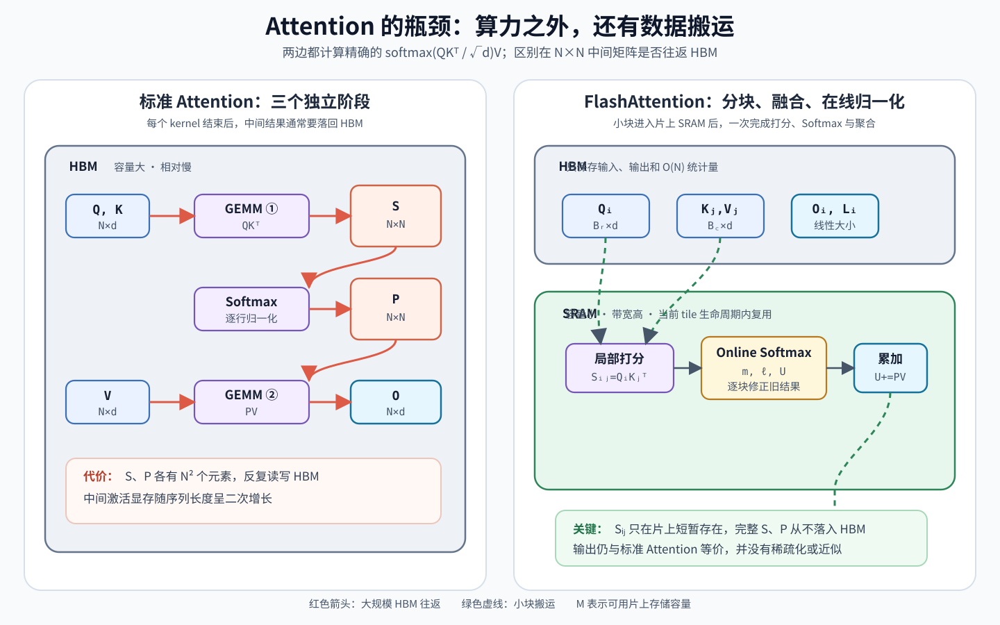
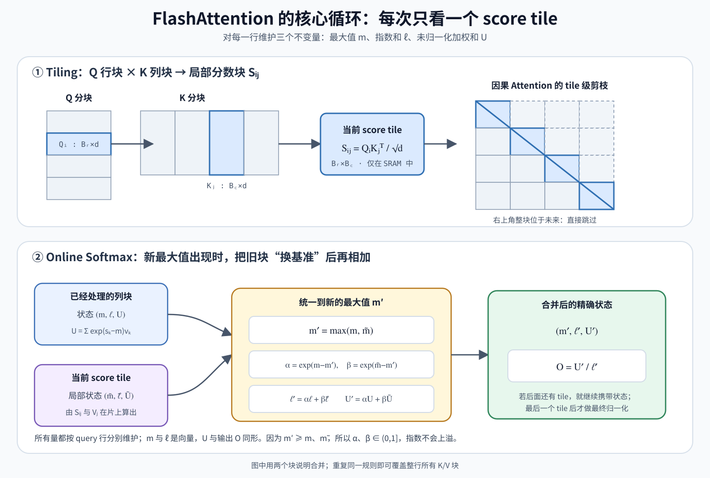

FlashAttention：从 Online Softmax 到 IO 感知¶
FlashAttention 的关键不是改变 Attention 的数学定义，而是改变它在 GPU 上的执行顺序：把 \(Q,K,V\) 分块搬进片上存储，在片上融合完成矩阵乘法、Softmax 和 Value 聚合，不把完整的 \(N\times N\) 注意力矩阵写回显存。
先记住三个结论：
- 它是精确 Attention：没有稀疏化，也没有低秩近似；输出仍是 \(\operatorname{softmax}(QK^\top/\sqrt d)V\)。
- 它没有消除二次计算量：前向计算仍是 \(O(N^2d)\)；主要减少的是 HBM 读写和 \(O(N^2)\) 中间激活。
- 算法核心是三件事：tiling（分块）、online softmax（在线归一化）和 recomputation（反向重计算）。
本文主要对应以下论文：
| 工作 | 论文解决的主要问题 |
|---|---|
| Milakov & Gimelshein, 2018，Online normalizer calculation for softmax | 一遍扫描维护 Softmax 的最大值与归一化因子 |
| Dao et al., NeurIPS 2022，FlashAttention | 用分块、融合与重计算减少 HBM IO |
| Dao, ICLR 2024，FlashAttention-2 | 改进并行度、warp 工作划分和非矩阵乘法开销 |
| Shah et al., NeurIPS 2024，FlashAttention-3 | 面向 Hopper，把数据搬运、GEMM 与 Softmax 异步流水化，并支持 FP8 |
| Zadouri et al., 2026，FlashAttention-4 | 面向 Blackwell 的新瓶颈重做流水线、指数计算与存储调度 |
1. 标准 Attention 慢在哪里¶
先看单个 head。设序列长度为 \(N\)，head dimension 为 \(d\)：
朴素实现通常分成三个 kernel：
- 计算 \(S=QK^\top/\sqrt d\)，把 \(S\) 写入 HBM；
- 从 HBM 读取 \(S\)，逐行做 Softmax，再把 \(P\) 写回 HBM；
- 从 HBM 读取 \(P,V\)，计算 \(O=PV\)。
\(S\) 和 \(P\) 都有 \(N^2\) 个元素。以 \(N=8192\)、BF16 为例，单个 head 的一个 \(N\times N\) 矩阵就约占
而且问题不只是“能否放下”，还有“需要搬几次”。FlashAttention 论文以 A100 为例：HBM 容量为 40–80 GB、带宽约 1.5–2.0 TB/s；每个 SM 的片上 SRAM 只有 192 KB，但估算带宽约 19 TB/s。片上存储小很多，却快约一个数量级。因此 Attention 常常不是算不动，而是大量时间花在 HBM 与计算单元之间搬运中间结果。

从图中可以看出，普通的“算子融合”还不够。完整的 \(S\) 放不进 SRAM；而 Softmax 的一个位置又依赖整行的分母，所以不能简单地把独立 kernel 拼在一起。必须回答两个问题：
- 只看到一部分 score 时，怎样得到整行 Softmax？
- 训练反向传播需要 \(S,P\) 时，怎样避免把它们保存到 HBM？
Online Softmax 和重计算分别解决这两个问题。
2. 从 Safe Softmax 到 Online Softmax¶
2.1 Safe Softmax 为什么要减最大值¶
对一行 score \(x=(x_1,\ldots,x_N)\)，直接计算
可能因为 \(e^{x_i}\) 太大而上溢。利用 Softmax 的平移不变性，令
此时 \(x_i-m\le 0\)，指数不会上溢。这就是 safe softmax。
但朴素 safe softmax 至少需要先扫描整行求 \(m\)，再扫描求 \(\ell\)。对于 FlashAttention，我们希望 score tile 算出来后立即消费，而不是先存下整行等待第二遍扫描。
2.2 在线更新最大值与分母¶
假设已经处理了前面的若干列块，并维护：
当前新块的局部统计量为：
合并后的最大值为
旧块原来以 \(m\) 为指数基准，新块以 \(\widetilde m\) 为基准。要把它们换到同一个新基准 \(m'\)，只需乘修正因子：
于是新的指数和为
展开第一项即可验证：
新块同理，因此 \(\ell'\) 正好是所有已处理元素在新基准下的指数和。由于 \(m'\ge m,\widetilde m\)，所以 \(\alpha,\beta\le 1\)，不会造成指数上溢。
2018 年的 Online Softmax 论文用这一递推把 safe softmax 的最大值和归一化因子合并到一次流式扫描中。FlashAttention 再把同样的思想提升到二维 tile，并同时在线维护 \(PV\) 的结果。
2.3 不只更新分母，还要更新输出¶
Attention 最终需要的不是概率矩阵 \(P\)，而是 \(PV\)。因此再维护一个未归一化加权和：
用相同的换基准方法：
所以每个 query 行只需携带三个状态：
| 状态 | 含义 | 大小 |
|---|---|---|
| \(m\) | 已处理 score 的最大值 | 标量 |
| \(\ell\) | 以 \(m\) 为基准的指数和 | 标量 |
| \(U\) | 以 \(m\) 为基准的未归一化 Value 加权和 | \(d\) 维向量 |
实际并行计算时，每个 \(Q\) tile 含多行，因此 \(m,\ell\) 是长度为 \(B_r\) 的向量，\(U\) 是 \(B_r\times d\) 的矩阵。

2.4 一个可核算的小例子¶
设一行 score 被分成两块：
第一块：
第二块到来后，\(m_2=3\)，旧状态要乘 \(e^{2-3}=e^{-1}\)：
最终
与一次性计算 \(\operatorname{softmax}([1,2,3,0])\cdot[10,20,30,40]^\top\) 相同。
3. FlashAttention 前向算法¶
将输入按序列维分块：
对一个 \((Q_i,K_j)\) 组合，只在 SRAM 中产生局部分数：
下面的伪代码采用 FlashAttention-2 更易理解的循环顺序：外层固定一个 \(Q_i\)，内层依次流过所有 \(K_j,V_j\)。它省略了 GPU thread block、warp、寄存器布局和向量化等实现细节，但完整保留了算法不变量。
def flash_attention_forward(Q, K, V, block_q, block_kv, causal=False):
scale = 1.0 / sqrt(Q.shape[-1])
O = zeros((Q.shape[0], V.shape[-1]))
L = empty(Q.shape[0]) # 每一行的 logsumexp，供反向传播使用
for i in range(0, Q.shape[0], block_q):
Qi = Q[i:i + block_q] # [Br, d]
rows = Qi.shape[0]
m = full((rows,), -inf) # running row max
ell = zeros((rows,)) # running exp sum
U = zeros((rows, V.shape[-1])) # 未归一化输出
for j in range(0, K.shape[0], block_kv):
Kj = K[j:j + block_kv] # [Bc, d]
Vj = V[j:j + block_kv] # [Bc, dv]
Sij = (Qi @ Kj.T) * scale # [Br, Bc]，只在片上存在
if causal:
Sij = apply_causal_mask(Sij, q_start=i, kv_start=j)
m_new = maximum(m, rowmax(Sij))
alpha = exp(m - m_new) # 旧状态换到新基准
P_tilde = exp(Sij - m_new[:, None])
ell = alpha * ell + rowsum(P_tilde)
U = alpha[:, None] * U + P_tilde @ Vj
m = m_new
O[i:i + block_q] = U / ell[:, None]
L[i:i + block_q] = m + log(ell)
return O, L
这里把新块直接减去全局新最大值 \(m'\)，所以公式中不再显式出现 \(\beta\)：它已经包含在 P_tilde = exp(Sij - m_new) 中。
3.1 为什么它仍然是精确 Attention¶
处理完第 \(j\) 个 \(K/V\) 块后，对每一行始终保持以下不变量：
当所有列块处理完毕，\(m^{(T_c)}\) 就是整行最大值，而
这是一种计算顺序重排，不是数学近似。浮点加法顺序发生变化，结果可能与另一个实现不逐 bit 相同，但误差属于正常的浮点舍入差异。
3.2 Causal Mask 如何利用分块¶
自回归 Attention 只允许第 \(i\) 个 query 看到 \(j\le i\) 的 key：
分块后有三类 tile：
- 完全位于对角线左下方：整块正常计算，不需要逐元素 mask；
- 与对角线相交：计算后施加块内 causal mask；
- 完全位于右上方：整块跳过，连 \(Q_iK_j^\top\) 都不用算。
因此长序列下，causal Attention 大约只需处理下三角的一半 score tile。FlashAttention-2 论文在其实验设置中报告，相比非 causal 情况，这一跳块策略带来约 \(1.7\)–\(1.8\times\) 的加速；具体数值仍取决于形状与硬件。
4. IO 复杂度：真正省掉了什么¶
FlashAttention 论文把片上 SRAM 可容纳的标量元素数记为 \(M\)，给出单个 head 的 HBM 访问复杂度：
| 实现 | 计算量 | HBM 访问量 | 额外中间内存 |
|---|---|---|---|
| 标准 Attention | \(\Theta(N^2d)\) | \(\Theta(Nd+N^2)\) | \(\Theta(N^2)\) |
| FlashAttention | \(\Theta(N^2d)\) | \(\Theta(N^2d^2/M)\) | \(O(N)\) |
这里的 \(O(N)\) 是输入和输出之外，用于每行 Softmax 统计量的额外空间；它不表示整个模型或 KV Cache 只占 \(O(N)\) 空间。
论文在 GPT-2 medium、序列长度 1024、head dimension 64、16 个 head、batch size 64、A100 的一次前向加反向实验中报告：FlashAttention 的 FLOPs 从标准实现的 66.6 GFLOPs 增加到 75.2 GFLOPs，但 HBM 读写从 40.3 GB 降到 4.4 GB，运行时间从 41.7 ms 降到 7.3 ms。这个实验很好地说明了其反直觉之处：
多做一点便宜的片上计算，可能比少算一点但反复访问 HBM 更快。
不过，这些数字是特定论文、硬件和输入形状下的结果，不能直接当作所有 GPU 上的固定加速比。
5. 反向传播：为什么重算反而更快¶
标准反向传播需要概率矩阵 \(P\)。若前向把 \(P\in\mathbb R^{N\times N}\) 保存下来，就重新引入了二次显存开销。
FlashAttention 前向只保存：
- 输出 \(O\in\mathbb R^{N\times d}\)；
- 每行的 log-sum-exp：
反向时重新加载 \(Q_i,K_j,V_j\) 的 tile，并在片上重算：
设上游梯度为 \(dO\)。Softmax 反向中每一行都需要
于是对当前 tile：
再分块累加：
这相当于一种选择性 gradient checkpointing：用额外 FLOPs 换掉 \(N^2\) 激活的存取。由于重算发生在 tile 已经位于片上之后，代价通常小于从 HBM 读取完整 \(S,P\)。
6. 从 FlashAttention-1 到 4¶
Online Softmax 的数学骨架在后续版本中没有变化；变化的是如何让它更贴合每一代 GPU 的瓶颈。
6.1 FlashAttention-1：先解决 HBM IO¶
FlashAttention（2022）确立了三件事：
- 用二维 tiling 不在 HBM 中物化 \(S,P\)；
- 将 GEMM、缩放、mask、Softmax、dropout 与第二个 GEMM 融合进一个 kernel；
- 反向保存 \(O\) 和归一化统计量，在片上重算 \(S,P\)。
原论文 Algorithm 1 的外层循环遍历 \(K,V\) 块，内层遍历 \(Q\) 块；这样每个 \(K_j,V_j\) 从 HBM 加载一次，但需要多次读写 \(Q_i,O_i,m_i,\ell_i\)。
6.2 FlashAttention-2：更好的并行与工作划分¶
FlashAttention-2（2023/ICLR 2024）并没有换掉核心公式，而是改进执行方式：
- 减少非矩阵乘法 FLOPs：循环中维护未归一化的 \(U\)，只在最后除以 \(\ell\)；反向只保存 \(L=m+\log\ell\)，而不是同时保存 \(m,\ell\)。
- 沿序列维增加 thread block 并行：除 batch 和 head 外，也让不同 \(Q\) 行块并行，长序列、小 batch/少 head 时能占满更多 SM。
- 重做 warp 间工作划分：减少 warp 之间通过 shared memory 交换局部结果的次数。
论文在 A100 上报告，FA2 相比 FA1 的 kernel 通常约快 \(2\times\)，前向达到理论峰值的 50%–73%。这些数字主要说明工作划分的重要性，而不是跨硬件的性能保证。
6.3 FlashAttention-3：面向 Hopper 的异步流水线¶
FlashAttention-3（NeurIPS 2024）针对 H100 的 Hopper 特性：
- 用 TMA 异步搬运 tile，用 WGMMA 异步执行矩阵乘法；
- 让 producer warpgroup 负责搬运、consumer warpgroup 负责计算；
- 用 ping-pong 调度让一个 warpgroup 做 Softmax 时，另一个做 GEMM；
- 对 FP8 使用块量化和 incoherent processing，降低离群值造成的量化误差。
其核心思想从“减少 IO”进一步变成“让 IO、Tensor Core 和 Softmax 单元尽量同时工作”。论文在 H100 上报告，前向相对 FA2 加速约 \(1.5\)–\(2.0\times\)；这是针对 Hopper 的结果。
6.4 FlashAttention-4：面向 Blackwell 的瓶颈迁移¶
FlashAttention-4（2026）观察到 Blackwell 的 Tensor Core 吞吐提升快于 shared memory 和指数单元，瓶颈因此从矩阵乘法转移到数据供给、Softmax 和同步。论文提出：
- 更大的 tile 与 fully asynchronous MMA 流水线；
- 用软件多项式模拟部分指数运算，并在最大值未变化时跳过不必要的 rescale；
- 使用 tensor memory 与 2-CTA MMA，降低 shared-memory 流量和反向 atomic add；
- 用 Python 内嵌的 CuTe-DSL 实现，缩短复杂 kernel 的编译时间。
论文在 B200、BF16 的特定基准上报告最高 1613 TFLOPs/s，约为理论峰值的 71%。这说明 FlashAttention 的“算法”并非一段永恒不变的 CUDA：数学不变量稳定，但 tile 大小、流水线、存储层次和并行策略必须随硬件演进。
7. 常见误区与使用边界¶
误区 1：FlashAttention 把时间复杂度降成了线性¶
没有。密集 Attention 仍要计算约 \(N^2\) 个 query-key 关系，计算复杂度仍为 \(O(N^2d)\)。它主要把中间显存从二次降为线性，并显著减少 HBM IO。
误区 2：FlashAttention 是近似算法¶
标准 FlashAttention 是精确算法。只有显式结合 block-sparse、局部窗口等稀疏模式时，才可能改变原本的密集 Attention 语义。
误区 3：只要 kernel fusion 就够了¶
如果没有 Online Softmax，就无法在只看到局部 score 时完成全局归一化；如果没有反向重计算，训练时仍要保存 \(N^2\) 的概率矩阵。融合、在线归一化和重计算缺一不可。
误区 4：所有场景都一定更快¶
不一定。实际收益受序列长度、head dimension、数据类型、mask、dropout、GPU 架构和 kernel 实现影响。短序列时启动与调度开销可能占主导；单 token 解码时，主要瓶颈往往是读取不断增长的 KV Cache，此时问题与训练或 prefill 中的大型方阵 Attention 不完全相同。
误区 5：可以手工固定一个“最优块大小”¶
块太小会增加循环和 HBM 搬运次数；块太大又会超出 shared memory/寄存器容量、降低 occupancy。生产实现通常针对硬件、dtype、head dimension、causal 与否选择或自动调优 tile 配置。
8. 一句话串起整篇¶
FlashAttention 先用分块把局部 \(Q_i,K_j,V_j\) 放进快速片上存储，再用 Online Softmax 的 \((m,\ell,U)\) 状态把各个 tile 的结果精确合并；前向不落盘 \(N^2\) 中间矩阵，反向用 \(O\) 和 logsumexp 重算概率，最终以更多片上计算换取更少 HBM IO。
参考资料¶
- Maxim Milakov, Natalia Gimelshein. Online normalizer calculation for softmax, 2018.
- Tri Dao, Daniel Y. Fu, Stefano Ermon, Atri Rudra, Christopher Ré. FlashAttention: Fast and Memory-Efficient Exact Attention with IO-Awareness, NeurIPS 2022.
- Tri Dao. FlashAttention-2: Faster Attention with Better Parallelism and Work Partitioning, ICLR 2024.
- Jay Shah et al. FlashAttention-3: Fast and Accurate Attention with Asynchrony and Low-precision, NeurIPS 2024.
- Ted Zadouri et al. FlashAttention-4: Algorithm and Kernel Pipelining Co-Design for Asymmetric Hardware Scaling, 2026.
- Dao-AILab/flash-attention 官方实现.